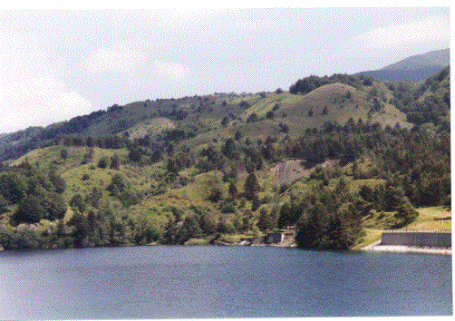

A.S. 2001-2002
Home
TESINA CLASSE V B GEOMETRI PROGETTO CINQUE
ESAME DI STATO
Componenti Gruppo D : C************** ,G**************,P*********** ,T***************
Il Docente :Prof. Rinosi Riccardo

Prosegui